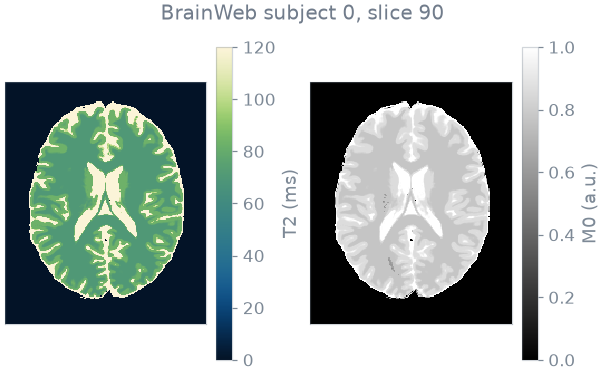
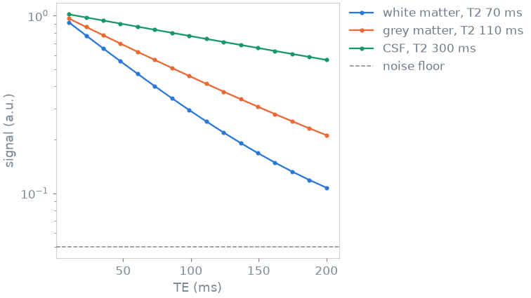
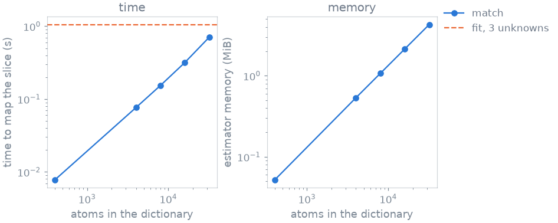
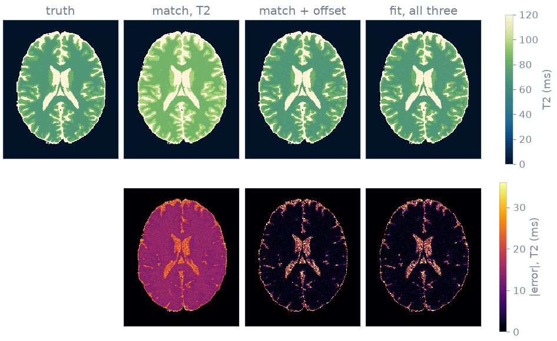

Note
Go to the end to download the full example code or to run this example in your browser via Binder.
T2 mapping by nonlinear least squares#
You map T2 from a multi-echo spin echo by nonlinear least squares and compare the result with dictionary matching on the same slice.
The comparison turns on a nuisance parameter. A magnitude reconstruction sits
on a noise floor, so the decay does not reach zero. Unlike the proton density,
this offset does not divide out of a normalized match: ignoring it biases T2,
and adding it to the dictionary multiplies the number of atoms. A fit instead
adds one column to the Jacobian, at the cost of no guarantee that it finds the
global minimum. blochsim supplies the model and its derivative; the fit is
bartorch’s apps.mobafit.
Prerequisites: Course lesson 1. Your first simulation.
import numpy as np
import torch
from bartorch import apps, nlop
from blochsim import ModelOperator
from blochsim.estimators import DictionaryMatcher
from blochsim.simulators import MultiEchoSimulator
Phantom#
The phantom is BrainWeb subject 0, slice 90: an axial 1 mm slice through the lateral ventricles. BrainWeb provides fuzzy tissue memberships, so each voxel holds a fraction of each tissue and its T2 is the fraction-weighted average. About a third of the voxels are mixtures, so the ground truth is a continuum of values rather than four.

Measurement and noise floor#
The sequence is a multi-echo spin echo with 16 echoes from 10 to 200 ms. The signal is the proton density times the T2 decay, plus a constant offset. A magnitude reconstruction rectifies the noise, so late echoes measure the floor and not zero, and a fit that does not model it absorbs it into T2.
ECHOES = 16
TE = torch.linspace(10.0, 200.0, ECHOES)
NOISE_STD = 0.005
FLOOR = 0.05
simulator = MultiEchoSimulator(TE=TE)
clean = simulator.simulate(T2=truth, M0=density, offset=FLOOR)
generator = torch.Generator().manual_seed(42)
measured = clean + NOISE_STD * torch.randn(clean.shape, generator=generator)
The 70 ms decay approaches the floor only in the last echoes, where the offset and T2 are hardest to separate; the long-T2 voxel never reaches it.

Nonlinear fit#
A ModelOperator declares the unknowns and the range of
each. The bounds are enforced by fitting a transformed variable, not by
clipping: no iterate leaves the interval and no bound is active at the
solution. The transformation also puts all parameters on a common scale,
which the damping assumes. M0 is one of the unknowns, so the operator carries
no separate complex amplitude.
bartorch’s mobafit() fits it voxel by voxel by
Levenberg-Marquardt. All voxels are updated in the same pass; each carries its
own damping, accepts or rejects its own step, and stops when it converges.
bartorch.nlop.ModelOperator carries the model on the voxel shape, and
the images go in with the echoes first:
fitted floor, median 0.0500 against 0.05
Dictionary match#
The same problem posed to a dictionary. A match normalizes both sides, so any positive scale is free and M0 drops out of the grid. The offset survives normalization, so modelling it requires putting it on the grid. The first dictionary ignores the offset:
T2_GRID = torch.logspace(1.0, np.log10(500.0), 400)
match = DictionaryMatcher(simulator.bind(M0=1.0, offset=0.0)).fit(T2=T2_GRID, seed=0)
The second has the offset on the grid, which is then the product of the T2 and offset grids: 400 by 40 atoms.
offsets = torch.linspace(0.0, 0.15, 40)
grid_t2, grid_offset = torch.meshgrid(T2_GRID, offsets, indexing="ij")
wide = DictionaryMatcher(simulator.bind(M0=1.0)).fit(
T2=grid_t2.reshape(-1), offset=grid_offset.reshape(-1), seed=0
)
Cost and accuracy#
Times are the best of three passes after a warm-up. model is the memory the fitted estimator holds between volumes, none for a fit. peak is the maximum GPU memory allocated while mapping the slice, blank on a machine without a GPU. The error is the median relative T2 error over the brain voxels.
method atoms train map model peak T2
----------------------------------------------------------------------------------
match, T2 only 400 0.0s 0.01s 0.1 MiB -- 17.9%
match, T2 x 10 offsets 4000 0.0s 0.08s 0.5 MiB -- 1.8%
match, T2 x 20 offsets 8000 0.0s 0.15s 1.1 MiB -- 1.8%
match, T2 x 40 offsets 16000 0.0s 0.32s 2.1 MiB -- 1.8%
match, T2 x 80 offsets 32000 0.0s 0.71s 4.3 MiB -- 1.7%
fit, T2 + M0, floor known -- 0.0s 0.64s 0.0 MiB -- 0.6%
fit, T2 + M0 + offset -- 0.0s 1.05s 0.0 MiB -- 1.8%
Interpretation#
The T2-only match is the fastest method here and the least accurate: the model it matches is not the model that produced the data. The residual it minimizes is small, at the wrong T2, and the estimator does not report the mismatch.
With the offset on the grid the match recovers. The cost is the number of offset values: ten values multiply the number of atoms and the memory by ten, for a parameter that adds one column to the fit’s Jacobian.
The fit is slower in wall-clock time, because a Levenberg-Marquardt loop takes tens of passes where a match takes one. Each additional nuisance parameter multiplies the number of atoms but adds one column to the Jacobian, so the time curves cross at some number of nuisance values. The fit holds no table between volumes at all, so its memory does not appear on the right.

Maps#
T2 from the match without the offset, the match with it, and the fit of all three parameters, with the absolute error in the second row.

Limits#
The fit has no guarantee of reaching the global minimum. Here it started every voxel at 100 ms and converged to the correct T2 everywhere, because the residual of a single exponential decay has one minimum. A model whose residual has several, such as a fingerprinting train or a fat-water fit at a wrong field map, can start in the wrong basin and stay there. A match cannot, because it scores every atom.
Equality constraints belong in the model, not in the bounds. Two fractions
that sum to one are written with one as the unknown and the other as 1 - f
inside the model, so the constraint holds at every iterate.
Specification#
What this page did, stated the way you would ask an agent for it:
With blochsim and bartorch, map T2 in BrainWeb subject 0, slice 90, from a
16-echo multi-echo spin echo (TE 10 to 200 ms) with a constant noise-floor
offset of 0.05 and Gaussian noise of 0.005. Fit T2, M0 and the offset with
bartorch's apps.mobafit over a blochsim ModelOperator (bounds T2 10-500 ms,
M0 0.1-2, offset 0-0.2).
Compare with a DictionaryMatcher over 400 log-spaced T2 values, without
the offset and with 10 to 80 offset values on the grid. Report mapping
time, estimator memory and median relative T2 error, and plot the maps.
Total running time of the script: (0 minutes 12.933 seconds)